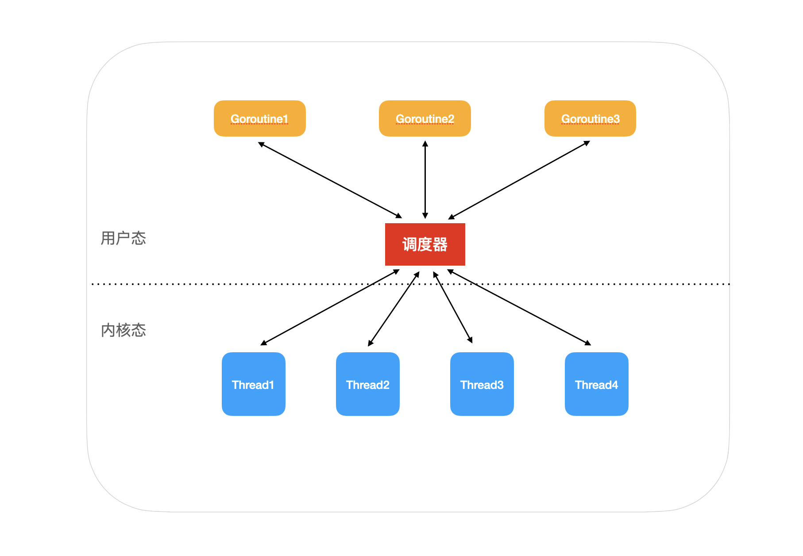
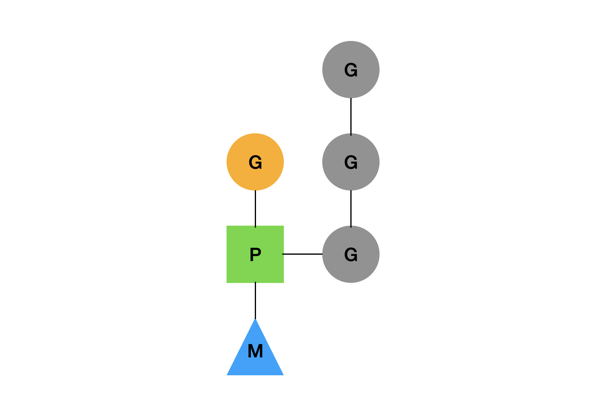
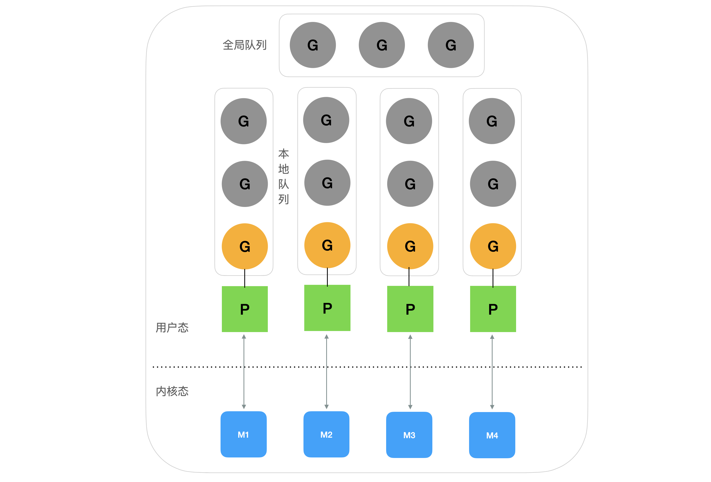

Goroutine 是如何运行的
在 Go 语言中，没有线程，只有 goroutine，这也是 Go 语言原生支持高并发的关键。 goroutine 是 Go 语言对协程的实现。goroutine 非常轻量级，一般只有几 Kb 的大小，而一个线程最小都有 1 M。
goroutine 本身只是一个数据结构，真正让 goroutine 运行起来的是调度器。
1. 为什么需要一个调度器
在计算机上运行的程序最终都是需要 CPU 去执行，协程只是运行在操作系统的用户态。协程真正的执行依然需要依靠操作系统内核态的线程去执行。
操作系统并不知道协程的存在，会把协程当做普通的程序来执行。既然协程是为了提高程序的执行效率，那么一个理想的情况是一个线程上可以执行多个协程。
如果一个协程对于一个线程，那就相当于协程的创建和运行还是由内核态来执行，这样的代价有点高。但如果一个线程上可以运行多个协程，如果其中的一个协程发生了阻塞，那么其他的协程就都无法执行了。
所以理想的情况是协程是线程的关系是 m:n，这样就可以克服 m:1 和 1:1 的缺点。但 m:n 的情况最为复杂，需要自己来实现协程在多个线程的调度，充分利用计算机的多核能力，再配合协程的轻量级的特性，实现程序的高并发。
在 Go 的实现中，goroutine 与内核态线程的对应关系就是是 m:n，所以就需要自己实现一个协程的调度器。

2. 调度器的结构
Go 调度器从最开始到现在也经历了不断的演进，最初的那个版本已经被放弃，目前使用的版本是在 2012 重新设计的，然后沿用至今。
现在用的这个调度器也被称之为 GMP 模型，3 个字母分表代表一个关键部件的名称：
- G：表示 goroutine，就是代表待执行的协程
- M：M 表示的是内核态的线程，goroutine 真正的执行需要依赖 M
- P：P 是调度器的核心，它会把 G 调度到合适的 M 上去执行，让 G 的执行尽可能快的完成

如果 M，也就是线程如果想要运行任务，就需要去获取一个 P，然后从 P 的任务队列中获取 goroutine 来执行。
在 P 上，会有一个正在 M 上执行的 G，但是同时也会维护一个本地的队列，里面都是待执行的 G，其中 P 的数量由 GOMAXPROCS 环境变量或者 runtime.GOMAXPROCS() 来决定，这表示在同一时间，只有 GOMAXPROCS 数量个 goroutine 在执行。
P 与 M 的数量没有固定的关系，如果当前的 M 阻塞了，P 就会去创建或者切换到另一个 M 上。
3. 调度器是如何运作的
在介绍完 GMP 的结构之后，我们再来看一下 GMP 调度器是如何运行起来的。
在 Go 语言中，我们创建一个 goroutine 非常简单，只需要使用 go 关键字:
go func() {
fmt.Println("New goroutine")
}()
这样就会创建上面所说的一个 G，然后放进调度器中开始调度。

每个 G 在被创建之后，都会被优先放入到本地队列中，如果本地队列已经满了，就会被放入到全局队列中。
然后每个 M 就开始执行 P 的本地队列中的 G，如果某个 M 把任务都执行完成之后，然后就会去去全局队列中拿 G，这里需要注意，每次去全局队列拿 G 的时候，都需要上锁，避免同样的任务被多次拿。
如果全局队列都被拿完了，而当前 M 也没有更多的 G 可以执行的时候，它就会去其他 P 的本地队列中拿任务，这个机制被称之为 work stealing 机制，每次会拿走一半的任务，向下取整，比如另一个 P 中有 3 个任务，那一半就是一个任务。
这样还有一个特别的场景需要说明，当一个 M 被阻塞时，M 就会与 P 解绑，让 P 去找其他空闲的 M 绑定执行后面的 G，如果没有空闲的 M，就会创建一个新的 M。当 M 阻塞结束之后，就会把 G 放入到全局队列中，这个机制称之为 hand off 机制。
work stealing 和 hand off 机制提高了线程的使用效率，避免的线程重复创建和销毁。
当全局队列为空，M 也没办法从其他的 P 中拿任务的时候，就会让自身进入自选状态，等待有新的 G 进来。最多只会有 GOMAXPROCS 个 M 在自旋状态，过多 M 的自旋会浪费 CPU 资源，多余的 M 的就会与 P 解绑，进入到休眠状态。
4. 小结
为了让 goroutine 的运行更有效率，Go 实现了一个用户态的调度器，这个调度器充分利用现代计算机的多核特性，同时让多个 goroutine 运行，同时 goroutine 设计的很轻量级，调度和上下文切换的代价都比较小。 而且利用 work stealing 和 hand off 机制，对线程进行复用，避免了线程的重复创建。
文 / Rayjun